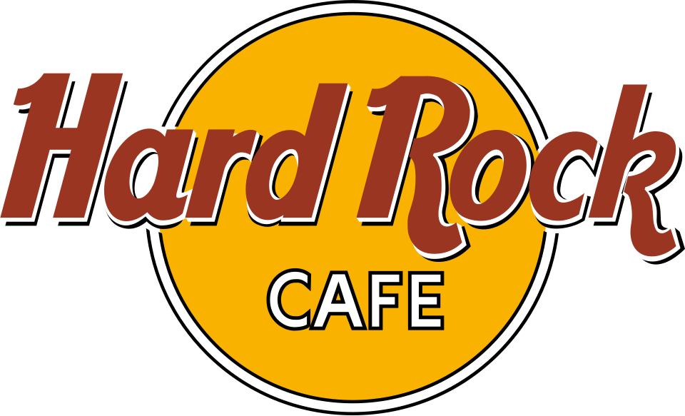

하드 록 카페 Hard Rock Cafe
하드 록 카페(Hard Rock Cafe)는 1971년 런던에서 Isaac Tigrett와 Peter Morton이 세운 테마 바 레스토랑 체인이다. 록 음악 기념품을 전시하는 매장과 기념품 숍, 박물관으로 이루어져 있다.
최종 업데이트

하드 록 카페는 어떤 브랜드인가
하드 록 카페는 테마 바 레스토랑, 기념품 숍, 박물관으로 이루어진 체인으로, 록 앤드 롤 기념품 전시가 특징이다. 1979년부터 매장 벽을 록 앤드 롤 기념품으로 채우기 시작했고, 이 전통은 체인의 다른 매장으로 확대되었다.
미국 내 카페는 대체로 가맹 없이 본사가 직접 소유하고 운영한다. 2007년 3월 Seminole Tribe of Florida가 Hard Rock Cafe International (USA), Inc.를 인수했고, 현재 체인은 Hard Rock International이 소유한다.
Hard Rock International은 호텔과 카지노 사업으로도 확장했으며, 이는 카페와 별도로 운영된다. 인수 이후 카지노 호텔 중심으로 전환하면서 2010년대와 2020년대에 여러 카페를 영구 폐쇄하고 있다.
하드 록 카페는 어떻게 시작되고 성장했나
1971년 6월 14일 런던 하이드 파크의 150 Old Park Lane에 첫 매장이 문을 열었다. 소유주는 미국인 Isaac Tigrett와 Peter Morton이었다.
초기에는 다양한 장식을 썼으나 이후 기념품을 전시하기 시작했고, 1978년 캐나다 토론토에 두 번째 매장을 열었다. 1982년 Morton이 로스앤젤레스, 샌프란시스코, 시카고, 휴스턴에 매장을 열었고, Tigrett는 뉴욕, 댈러스, 보스턴, 워싱턴 D.C., 올랜도 등에 열며 체인이 세계로 확장되기 시작했다.
1990년 The Rank Group이 Mecca Leisure Group을 인수해 확장을 이어갔고, 이후 Peter Morton의 Hard Rock America를 사들였다.
하드 록 카페의 브랜드 아이덴티티는 무엇인가
런던에서 시작한 테마 레스토랑 체인이며, 록 앤드 롤 기념품으로 매장 벽을 채우는 전통이 이 브랜드를 다른 레스토랑과 구분 짓는다.
하드 록 카페의 대표 제품과 서비스는 무엇인가
핵심 사업은 테마 바 레스토랑인 하드 록 카페 매장이다. 매장에서 기념품을 판매하는 숍을 함께 운영하며, 체인에는 박물관도 포함된다.
미국에서는 카페를 가맹하지 않고 직영으로 운영하는 것이 원칙이다. Hard Rock International은 Hard Rock Hotel and Casino로 호텔과 카지노 사업에 진출했으며 이를 카페와 별도로 운영한다.
과거에는 Albuquerque와 Tulsa에서 카페 없이 호텔만 가맹 형태로 열린 사례가 있었고, Sioux City에서도 Morgan's로부터 가맹을 받은 카지노 호텔이 문을 열었다.
하드 록 카페는 지금 어떤 상태인가
2007년 3월 Seminole Tribe of Florida가 인수해 만든 Hard Rock International의 자회사로 운영한다. 기업 사무실은 올랜도에 있다가 2018년 4월 Davie, Florida로 옮겼다.
인수 이후 카지노 호텔 중심으로 전환하며 2010년대와 2020년대에 여러 매장을 영구 폐쇄했고, 파리 매장은 2024년에 문을 닫았다.
하드 록 카페 로고는 어떻게 변해왔나
자주 묻는 질문
하드 록 카페는 언제 설립되었나요?
하드 록 카페는 1971년 설립되었습니다.
하드 록 카페는 어떤 산업의 브랜드인가요?
하드 록 카페는 식음료 분야의 브랜드입니다.
하드 록 카페의 브랜드 아이덴티티는 무엇인가요?
런던에서 시작한 테마 레스토랑 체인이며, 록 앤드 롤 기념품으로 매장 벽을 채우는 전통이 이 브랜드를 다른 레스토랑과 구분 짓는다.
하드 록 카페의 대표 제품은 무엇인가요?
핵심 사업은 테마 바 레스토랑인 하드 록 카페 매장이다.
하드 록 카페는 어느 기업이 소유하고 있나요?
2007년 3월 Seminole Tribe of Florida가 인수해 만든 Hard Rock International의 자회사로 운영한다.
하드 록 카페의 창업자는 누구인가요?
하드 록 카페의 창업자는 Isaac Tigrett, Peter Morton입니다(위키데이터 기준).
하드 록 카페의 본사는 어디에 있나요?
하드 록 카페의 본사는 올랜도에 있습니다(위키데이터 기준).
출처와 검증
하드 록 카페 관련 참고: 공식 웹사이트 · 위키데이터 Q918151 · 한국어 위키백과 · 영어 위키백과. 브랜드명은 한글과 원어를 함께 표기하되 데이터에 없는 표기는 만들지 않습니다. 기원 국가·설립연도는 검수된 정의문에서 확인된 값을 우선하고, 없을 때만 공식 웹사이트 URL이 일치하는 위키데이터 개체의 값을 씁니다. 위키데이터 값은 2026-11-12 기준입니다.